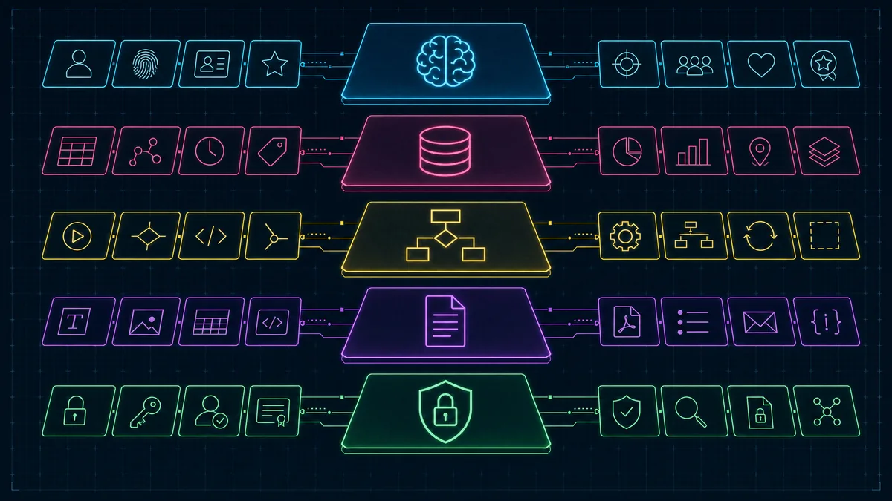
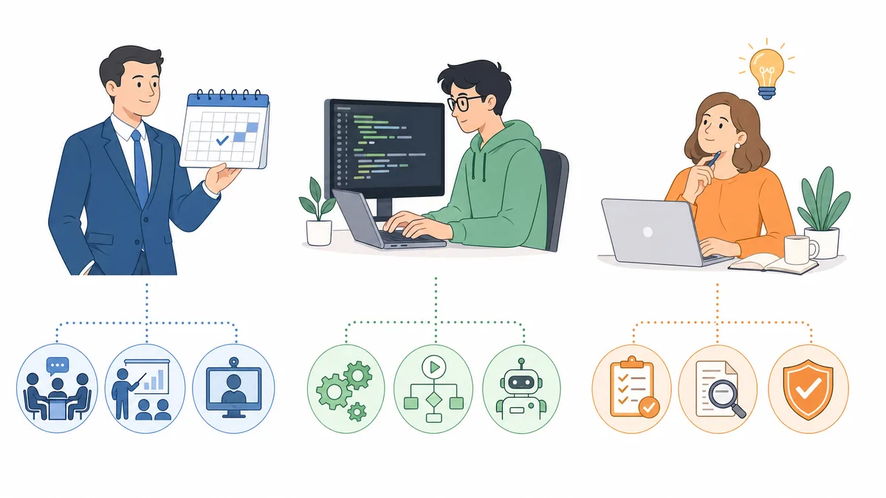
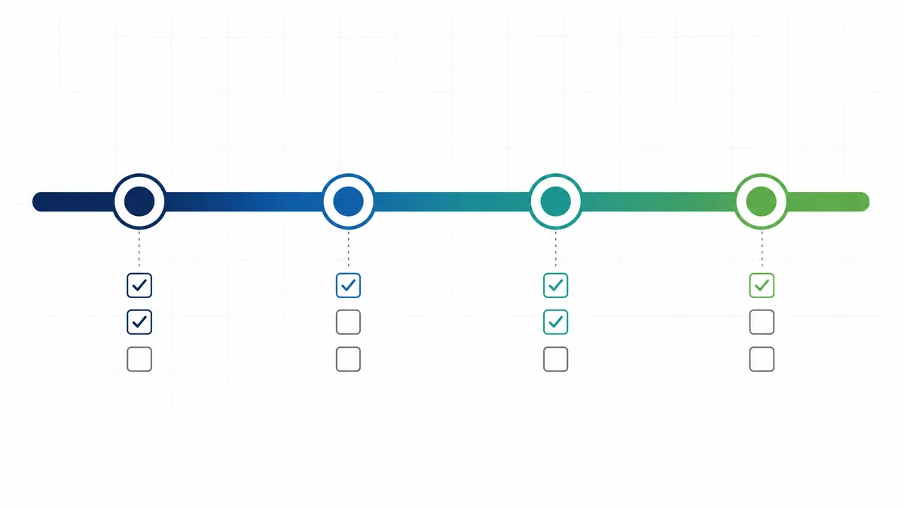

Reading time: 5 minutes
Strategic concepts are one thing. Functioning systems are another. Once you understand Context Engineering as a methodology, you are faced with a practical question: How do I implement this – and what architecture do I actually need?
This article reveals the technical reality behind a productive Context Engineering system: which workflows are running, how prompts are structured, who is responsible for what – and where the most common pitfalls lie.
Why Two Workflows Are Better Than One
Most companies build automations as monoliths: a single workflow does everything – from data procurement to processing. That works until it doesn't. When it fails, it's unclear whether the issue lies in moving files or in the AI processing.
The solution: Functional separation.
The system behind this approach consists of two separate workflows that handle distinct tasks:
Workflow 1: Document Logistics (No AI)
- Task: Copy meeting transcripts from individual folders to a central team folder
- Technology: Google Apps Script (alternatives: Power Automate, n8n, Make) [1]
- Trigger: Time-based, once a week (e.g., Friday 6:00 PM)
- Filter: Only files with a defined marker emoji, only files from the last 7 days
This workflow is dumb – intentionally. It moves files, nothing more. No analysis, no interpretation, no costs for AI processing.
Workflow 2: Intelligent Processing (AI-based)
- Task: Read transcripts, extract relevant information, create a structured context document
- Technology: Workflow engine with AI agent integration (e.g., Langdock, n8n with OpenAI integration, or Microsoft Power Automate with Azure OpenAI)
- Trigger: Time-based, after Workflow 1 (e.g., Saturday 6:00 AM)
- Process: Loop through all new documents → Agent-based processing → Create short-term memory → Update long-term memory
This workflow is expensive – but only when it actually processes data. If Workflow 1 doesn't run, Workflow 2 costs nothing.
Why this separation is crucial:
- Sources of error are isolatable. If Workflow 2 fails, it's due to the AI processing, not missing files.
- Costs are controllable. AI processing costs money. Moving files does not. Separating both means you only pay for what creates value.
- Ownership can be distributed. Workflow 1 needs someone to maintain scripts. Workflow 2 needs someone to optimize prompts. These are entirely different skill sets.
How a Base Prompt is Actually Structured

Prompts are not one-liners. Anyone expecting "Summarize the meeting" to deliver consistent results will be disappointed. A production-ready base prompt has an architecture – five layers working together.
1. Identity & Mission
"You are the Chief of Staff AI. Your mission: Transform noise into strategic clarity."
The role defines not only the tone but also the perspective. A "Chief of Staff AI" evaluates information differently than a "Meeting Minutes AI". Identity dictates what is considered relevant.
2. Company-Specific Context
"The company has three business areas: Consulting, Product Development, Community Building. Technology focus: Cloud Infrastructure, Enterprise Software, AI Integration."
Without this context, the agent cannot assess relevance. If it doesn't know which business areas exist, it will mark irrelevant discussions as strategically important.
3. Methodological Frameworks
"Reference: AI Reflex Principle (is a problem being solved manually that should be automated?), Type-1/Type-2 Decision Framework (is a decision reversible?), Pilot Hell Detection (is a project stuck in endless pilot status?)."
These frameworks are evaluation grids. They refer to separate context documents containing the complete methodology. The agent uses them to categorize information – not just collect it [2].
4. Output Format
"Structure: Current / Ongoing / Learned. Formatting: H2 for main categories, bullet points for details, max. 3 sentences per point."
Without a clear output format, the agent produces a differently structured document every week. This makes downstream usage impossible. The format is not a nice-to-have – it is an integration point.
5. Security Protocol
"Reference: Internal AI Usage Policy. Real names → Initials. Client names → anonymized. Revenues → orders of magnitude. No output of sensitive data."
This is the Governance Layer. Many implementations forget it – and pay for it at the latest during the first data privacy incident [3] [4].
Ownership is Not an Org Chart Problem

A common mistake: The entire system is assigned to one person. "You are now responsible for Context Engineering." This doesn't work because Context Engineering has three distinct areas of responsibility.
Meeting Owner
- Responsible for: Tagging the right meetings, quality of transcripts
- Example: Executive management as the organizer of strategic weeklies
- Timeframe: Correction window until Friday 4:00 PM
This person decides what flows into the system. Not a technical role – a content-driven one.
Workflow Owner (Technical)
- Responsible for: Functionality of the automations
- Example: IT Admin maintaining Google Apps Script
- Tasks: Renew API access, debug scripts, isolate error sources
This person ensures the system runs. Doesn't have to be the same person as the Meeting Owner [5].
Knowledge Owner
- Responsible for: Quality of the output
- Example: Chief of Staff, Strategy Lead
- Questions: Is the weighting correct? Is relevant information missing? Are the right conclusions drawn?
This person evaluates whether the system delivers value. Requires contextual understanding – not technical expertise.
Why this separation is important:
If one person takes on all three roles, they become a bottleneck. If no one is clearly assigned the roles, nothing happens.
4 Months to a Productive System

For companies starting from scratch, a realistic timeline looks like this:
Month 1: Preparation
- Identify meetings to be transcribed
- Introduce transcription tool (e.g., Google Meet, Microsoft Teams)
- Create awareness: What is documented, what isn't?
- Parallel: Build company profile page, create initial context documents
Month 2: Laying the Foundation
- After 6–8 weeks of transcripts, enough material is available
- Develop base prompt (see architecture above)
- Set up and test workflow
- Result: First version of the weekly context document
Month 3: Testing Phase
- Run workflow in a small team (Piloting!)
- Evaluate output quality
- Iterate base prompt
- Adjust output format
- Clarify governance questions: What can be included, what cannot? [6]
Month 4+: Step-by-Step Rollout
- Onboard team by team
- Generate context documents from the growing logbook
- Equip agents with the new company knowledge
- Only now does the pilot become a system
Important: This timeline only works if someone assumes the three ownership roles. Without clear responsibility, the project dies in Month 2.
The Four Most Common Pitfalls
1. Scaling Too Fast
The impulse to immediately integrate the entire company is understandable – but fatal. Too many cooks spoil the broth. Start small. One team. One workflow. One context document. Only expand when that works.
2. Forgetting Governance
Without clear rules on what information can be processed and how, it's only a matter of time before sensitive data ends up where it doesn't belong. GDPR is not a downstream problem – it's a design parameter [7] [8].
3. Underestimating Costs
The cost per run sounds harmless. But as the system grows – more teams, more meetings, more processing steps – costs add up. Processing frequency is a conscious design factor, not a technical afterthought.
4. Not Using the Output
The best context document is worthless if no one reads it and no agent accesses it. The final step – actually integrating the result into the AI infrastructure and human communication – is the most important [9].
The Path to the AI Operating System
Context Engineering in Phase Zero is the beginning. The next step: Building a complete AI Operating System from these foundations.
- Audience-based context documents
- Bidirectional communication flows (for humans and machines)
- Governance framework that enables scaling instead of preventing it [10]
But every step on this path begins with the same foundation: Structured, curated, up-to-date company knowledge. Without that, everything else is just decoration.
References
- Google Apps Script Automation
- AI Methodological Frameworks
- Engineering GDPR compliance in the age of agentic AI
- AI system development: CNIL's recommendations
- Google Apps Script Triggers Overview
- Power Platform Governance Considerations
- Privacy, AI, and GDPR
- Secure your data in Power Automate
- How to Build a Knowledge Intelligence Architecture
- AI Agent Orchestration Frameworks